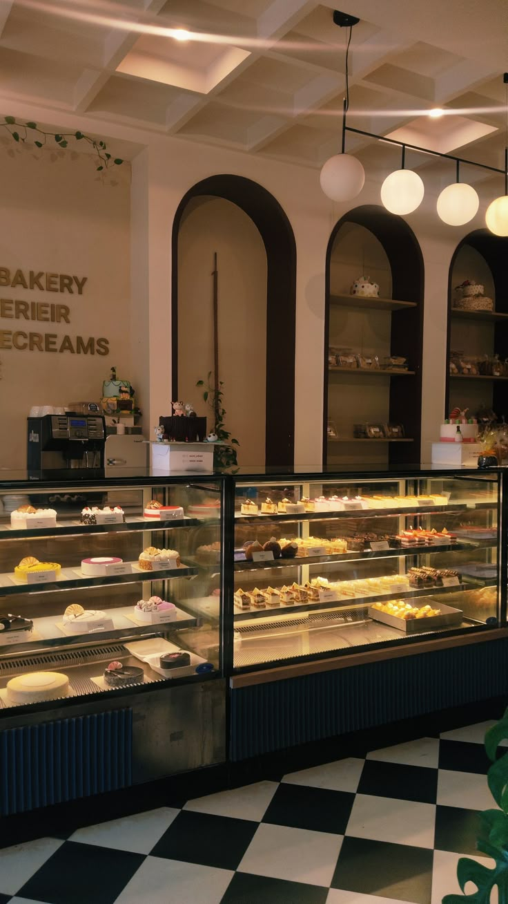

|
Homemade recipes since 2024.Fresh Ingredients,baked with love every morning.

Tshego's Bakery is a local, family-friendly bakery dedicated to creating fresh, delicious and affordable baked goods. We offer a variety of treats, including freshly baked bread, cupcakes, cookies, pastries and beautifully decorated cakes for birthdays, weddings and other special occasions.
Our goal is to bring people together through good food while providing friendly and reliable services.We use quality ingredients and pay attention to detail to ensure that every product is made with care
Whether you are looking for a sweet treat for yourself or a custom cake for a special occasion, Tshego's Bakery is here to make every occasion a little sweeter.